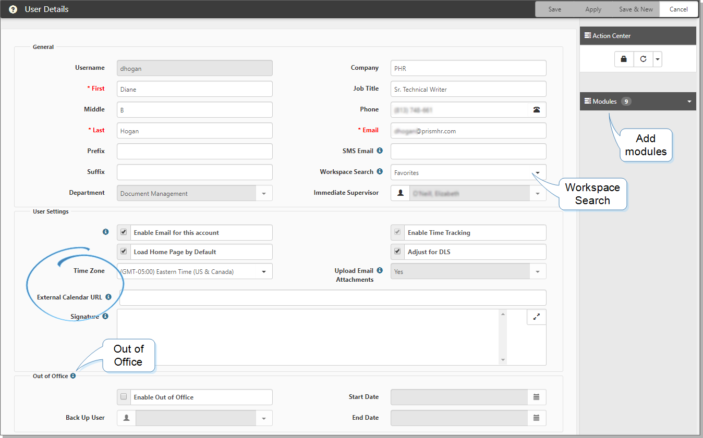

This topic reviews features for personalizing your user profile. In addition to the basic demographic data, you can customize the profile so that the application functions the way you like. Let's look beyond the basic demographic information in the General area and focus on Workspace Search, Time Zone, External Calendar URL, and Out of Office fields.
To personalize your user profile:
Go to username > My Profile.
The User Details form opens.

Complete the form.
|
Modules |
You can add modules to your modules bar to provide enhanced functionality and navigation. In the Action Center, click Modules. Click Select Modules. Select a module or double-click an entry and click Ok. New modules are displayed at the bottom of the list, where you can reorder using the blue arrows. Press F5 to refresh the screen. |
|
Workspace Search |
If your Home page contains the Workspace widget, you can set the default to Favorites or Recent Workspaces. |
| Adjust for DLS | Automatically adjusts your calendar events to take daylight savings (DLS) time into account when setting the event time. |
| Time Zone | Default is Eastern Standard Time. |
| External Calendar URL | Can be set to use the ICS file location for an external calendar such as Exchange and Gmail. External calendar events display as green and are not editable. This feature allows you to combine your external calendar with your internal system calendar. |
|
Enable Out of Office |
When you enable this option, you can:
See |
 Watch the following video on Personalizing Your User Profile.
Watch the following video on Personalizing Your User Profile.
To watch a video about personalizing your user profile, see